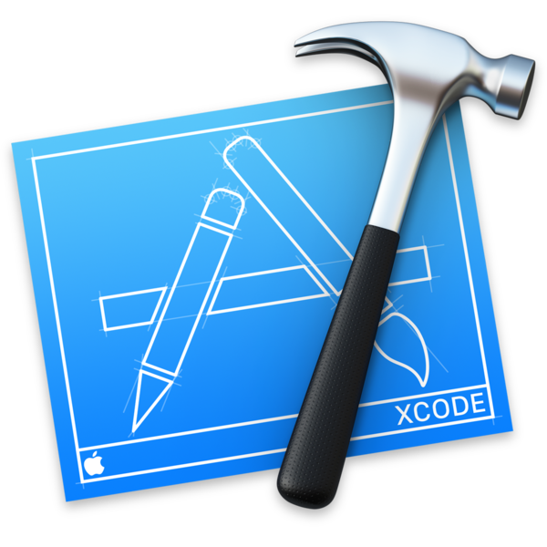
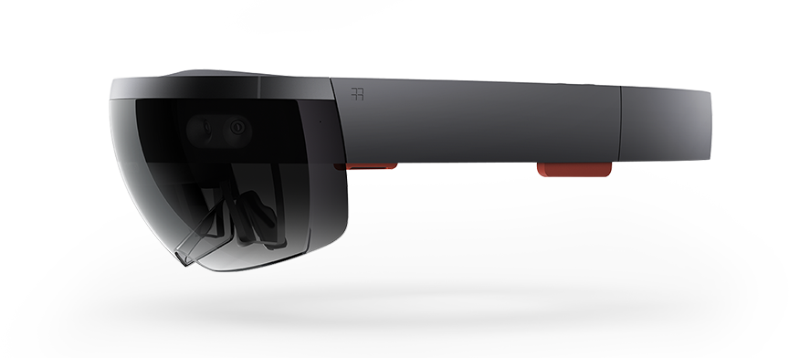
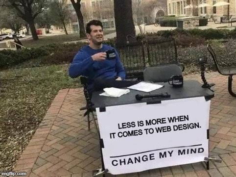

This portfolio showcases all the various coursework and projects I have done throughout my time in the New Media Institute.
Through my new media courses, I learned about the basics of technological evolution, the development of the Internet, and the rise of mobile technologies. I was introduced to a variety of programming lanaguage and discovered how to apply these languages towards the development of websites and mobile applications.
I also explored new technologies such as the Hololens and, while that particular piece of technology has no foreseeable future in the mass market, I had the opportunity to develop software and apply cutting-edge technology for emerging devices.
There was no real hardship in my process. I was introduced to a programming language, learned the basics in a tutorial, never really struggled, and explored it to my liking to develop fun projects. Thankfully, it came pretty naturally, and I was able to use my skills for assignments in other classes as well as my personal projects (check out my homepage for more info).

Javascript is love, Javascript is life.
I've always been a minimalist when it comes to design. Some may look at the layout of this page and think 'Wow, he was lazy.' That's far from the case. Everything about this is coded from scratch and deliberate. From my choice to list everything out plainly (it harkens back to a simple Apache server repository, like mine), to my choice to use Google's Material Design language (that's why the links look like that when you hover over them), to my choice to make the background that "boring" grey (it should remind you of a newspaper, seeing as I'm a journalist).
In my opinion, Web 1.0 was a simpler time, before graphics and visuals got in the way of content.
